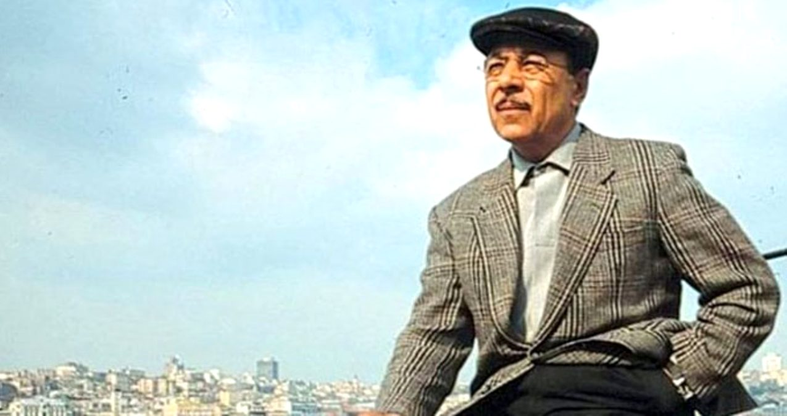

NEŞET ERTAŞ
Bozkırın Tezenesi
Neşet Ertaş, 20. yüzyılda dünyaya gelmiş, eşsiz sesiyle, sazıyla ve besteleriyle 21. yüzyıla da erişmiş büyük bir ozandı. Babası, Muharrem Ertaş gibi 'Aydost deyince yeri göğü inleten' biriydi... 74 yıllık ömrüne en çok yoksul ve bir o kadar da 'garip'lik sığdıran bir ozandı...

Ertaş, ilkokula gittiği yıllarda önce keman, sonra da bağlama çalmayı öğrendi. Babası Muharrem
Ertaş ile
birlikte yörenin düğünlerinde sazı ile türküler söylemeye başladı. Ertaş, etkilendiği tek
kişinin babası
Muharrem Ertaş olduğunu söyler. Bu durumu şu şekilde ifade eder:
"Babamla ben aynı ruhun insanlarıyız."
"Babamla ben aynı ruhun insanlarıyız."